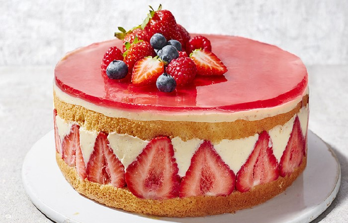

FRAISIER GARNI DE FRUITS ROUGES

Fiche technique
- Nombre de personnes : 8
- Niveau : Facile
- Temps de Préparation : 25 min
- Temps de Cuisson : 10 min
- Coût : Moyen
- Calories : Moyen
Ingrédients
- 300g de Fraises
- 140g de Sucre en poudre
- 140g de Farine
- 250g de Mascarpone
- 48cl de Crème fleurette
- 6 Oeufs
- 6 Cuil. à soupe Bombées de sucre glace
Préparation
- Préchauffez le four à 180°C.
- Séparez les blancs des jaunes.
- Fouettez les jaunes avec le sucre pendant 5 min.
- Ajoutez la farine en pluie tout en continuant de fouetter.
- Montez les blancs en neige bien ferme et incorporez -les délicatement à la maryse au mélange précédent.
- Versez la pâte à génoise sur une plaque de cuisson recouverte de papier sulfurisé et enfournez 12-15 min. Réservez
- Taillez 2 rectangles dans votre génoise aux dimensions du cadre. Placez le premier rectangle de génoise dans le cadre.
- Montez le mascarpone et la crème en chantilly en y ajoutant petit à petit 3 - 4 cuil. à soupe de sucre glace.
- Rincez et équeutez les fraises.
- Coupez-en quelques unes en tranches afin de tapisser le pourtour du cadre, puis coupez le reste en 2.
- Remplissez une poche à douille de chantilly et garnissez-en généreusement la génoise.
- Enfoncez les morceaux de fraises dans la chantilly et terminez en posant le second rectangle de génoise.
- Pressez légèrement et placez au frais 2h minimum.
- Démoulez et saupoudrez du reste de sucre glace.